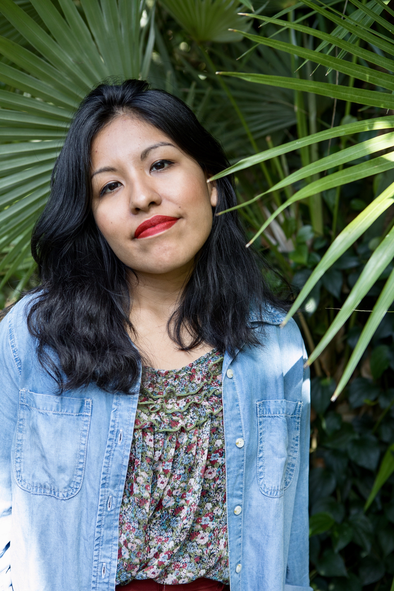

As an Andina-identifying woman from New York City, raised by a working-class immigrant family, I entered this work with the aim of building towards more full and authentic diasporic identities within the US Latinx framework. During this year’s Forum, as I shared for the first time amongst my new colleagues some of my work and findings as an oral historian; I asked, “How might traditional (ie. colonial, euro-centric) oral history + archival frameworks, such as documenting for purely evidence’s sake, undermine liberatory processes?”
Formerly: Currently, she is an MSI candidate in Digital Curation and Archives at the School of Information at The University of Michigan and currently works at the University of Michigan Library's Digital Preservation Unit.
Say Hello: You can say hi 👋🾠on Twitter & on Instagram.